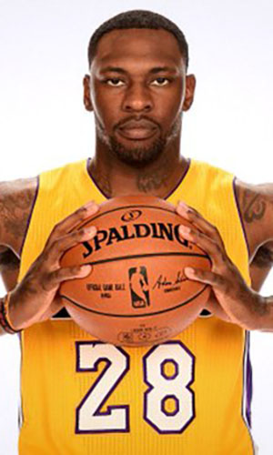

|  |
Матчи |
63 |
|
Передачи (всего/среднее) |
42 |
0.7 |
| В основе |
39 |
|
Подборы в защите (всего/среднее) |
226 |
3.6 |
| Время (всего/среднее) |
1195:19 |
18:58 |
Подборы в атаке (всего/среднее) |
143 |
2.3 |
| Очки (всего/среднее) |
379 |
6 |
Подборы (всего/среднее) |
369 |
5.9 |
| 2-очковые броски (всего/среднее) |
157/272 |
62.5/4.3 |
Перехваты (всего/среднее) |
19 |
0.3 |
| 2-очковые броски (% реализации) |
57.7% |
|
Потери (всего/среднее) |
48 |
0.8 |
| 3-очковые броски (всего/среднее) |
0/1 |
0/0 |
Блокшоты (всего/среднее) |
24 |
0.4 |
| 3-очковые броски (% реализации) |
0% |
|
Блокшоты соперника (всего/среднее) |
29 |
0.5 |
| Штрафные броски (всего/среднее) |
65/118 |
1/1.9 |
Фолы (всего/среднее) |
158 |
2.5 |
| Тарик Блэк |
Штрафные броски (% реализации) |
55.1% |
|
Коэффициент полезности (всего/среднее) |
429 |
6.8 |